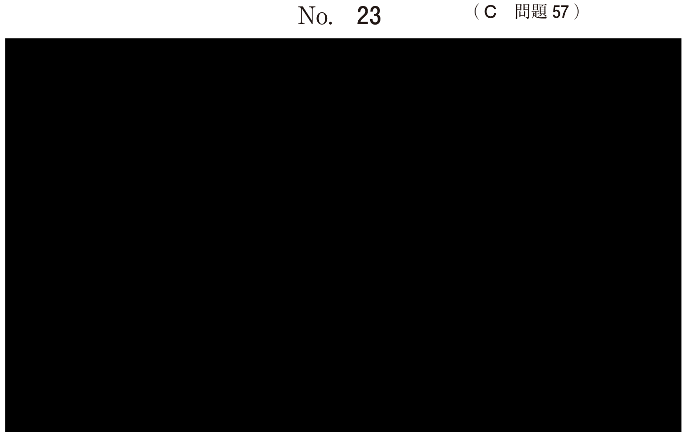

プライヤー
プライヤーの分類
矯正用プライヤーは用途によって分類される。国試では写真を見て用途を答える問題が頻出である。
| 用途 | 代表的なプライヤー |
|---|---|
| 線屈曲 | Tweedのアーチベンディング、ループフォーミング、ヤング、バードビーク、ビーソー、三嘴、ライトワイヤー |
| 結紮 | ホウ（Howe）、リガチャータイイング、ユーティリティ |
| 歯間分離 | セパレーティングエラスティック |
| バンド調整 | バンドコンタリング |
| バンド撤去 | バンドリムービング |
線屈曲用プライヤー
アーチワイヤーや主線の屈曲に用いる。先端の形状（平面と丸の組み合わせ）が特徴的である。
Tweedのアーチベンディングプライヤー
トルク付与、オフセット、フックの屈曲に用いる。先端は丸と平面の組み合わせ。角ワイヤーの屈曲に適している。
Tweedのループフォーミングプライヤー
ループの形成に用いる。先端は半円形と丸の組み合わせ。
その他の線屈曲用プライヤー
| プライヤー | 特徴・用途 |
|---|---|
| ヤングのプライヤー | 主線・補助弾線の屈曲（太い部分で主線、細い部分で補助弾線） |
| バードビークプライヤー | 細い線（アーチワイヤー）の屈曲 |
| ビーソーのプライヤー | 主線の屈曲（補助弾線には不適） |
| 三嘴プライヤー | 主線の屈曲、クワドヘリックスの活性化 |
| ライトワイヤープライヤー | 細い線の屈曲 |
結紮用プライヤー
アーチワイヤーをブラケットに結紮する際に用いる。
| プライヤー | 用途 |
|---|---|
| ホウ（Howe）のプライヤー | 結紮、アーチワイヤーの着脱 |
| リガチャータイイングプライヤー | 結紮線を締める |
| ユーティリティプライヤー | 結紮、アーチワイヤーの着脱 |
歯間分離用プライヤー
セパレーティングエラスティックプライヤー
ゴムの小リングを歯間に挿入し、歯間分離を行う。ゴムを2〜3日装着すると歯間が分離し、バンドが装着しやすくなる。
- セパレーティングエラスティックプライヤー vs リガチャータイイングプライヤー：先端の形が似ている
- バンドリムービングプライヤー vs レジンリムーバー
過去問
矯正歯科治療で用いる器具の写真（別冊No.3）を別に示す。
トルク付与を目的とする角ワイヤーの屈曲に用いるのはどれか。1つ選べ。

b イ
c ウ
d エ
e オ
【解説】トルク付与を目的とする角ワイヤーの屈曲にはTweedのアーチベンディングプライヤーを用いる。先端が丸と平面の組み合わせで、角ワイヤーにトルクを付与できる。
矯正歯科治療中の口腔内写真（別冊No.5）を別に示す。
アーチワイヤーの屈曲に用いるのはどれか。2つ選べ。

b Youngのプライヤー
c ユーティリティープライヤー
d Tweedのアーチベンディングプライヤー
e Tweed のループフォーミングプライヤー
【解説】アーチワイヤーの屈曲にはTweedのアーチベンディングプライヤーとループフォーミングプライヤーを用いる。Howeのプライヤーとユーティリティープライヤーは結紮用、Youngのプライヤーは主線・補助弾線の屈曲用である。
矯正装置装着前の口腔内写真（別冊No.33A）と歯科治療で用いる器具の写真（別冊No.33B）を別に示す。
矢印で示すものを歯間に挿入する際に用いるのはどれか。1つ選べ。


b イ
c ウ
d エ
e オ
【解説】歯間分離用のゴムリングを歯間に挿入するにはセパレーティングエラスティックプライヤーを用いる。バンド装着前に歯間を分離するために使用する。
矯正用器具の写真（別冊No.5）を別に示す。
アーチワイヤーをブラケットに結紮するのに用いるのはどれか。2つ選べ。

b イ
c ウ
d エ
e オ
【解説】アーチワイヤーをブラケットに結紮するには結紮用プライヤー（ホウのプライヤー、リガチャータイイングプライヤー、ユーティリティプライヤーなど）を用いる。写真から結紮用の器具を選ぶ。